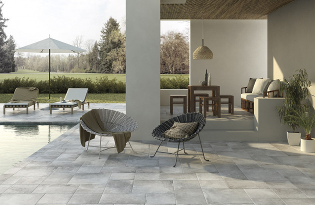
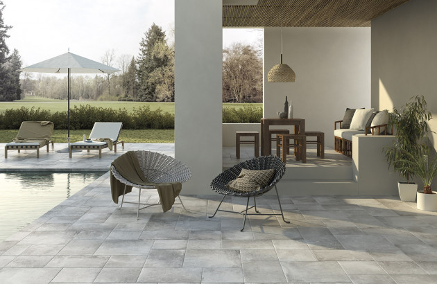
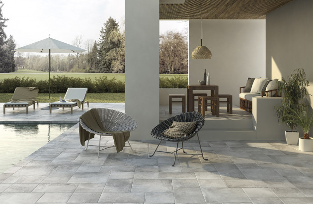

Nos réalisations
 

Pose, rénovation et créations sur mesure depuis plus de 15 ans.
Contactez-moiSol et mur, pour toutes les pièces de la maison : cuisine, salle de bain, terrasse...
Redonnez vie à vos intérieurs grâce à un travail soigné et durable.
Mosaïques, douches italiennes, motifs personnalisés – votre imagination devient réalité.

Fort de 15 ans d’expérience, Carrelage COT met son savoir-faire artisanal au service des particuliers et professionnels. Nous travaillons uniquement avec des matériaux de qualité pour un résultat durable, précis et esthétique.
üìç Cambon et alentours
üìû 06 27 02 50 94
✉️ j-cot@wanadoo.fr